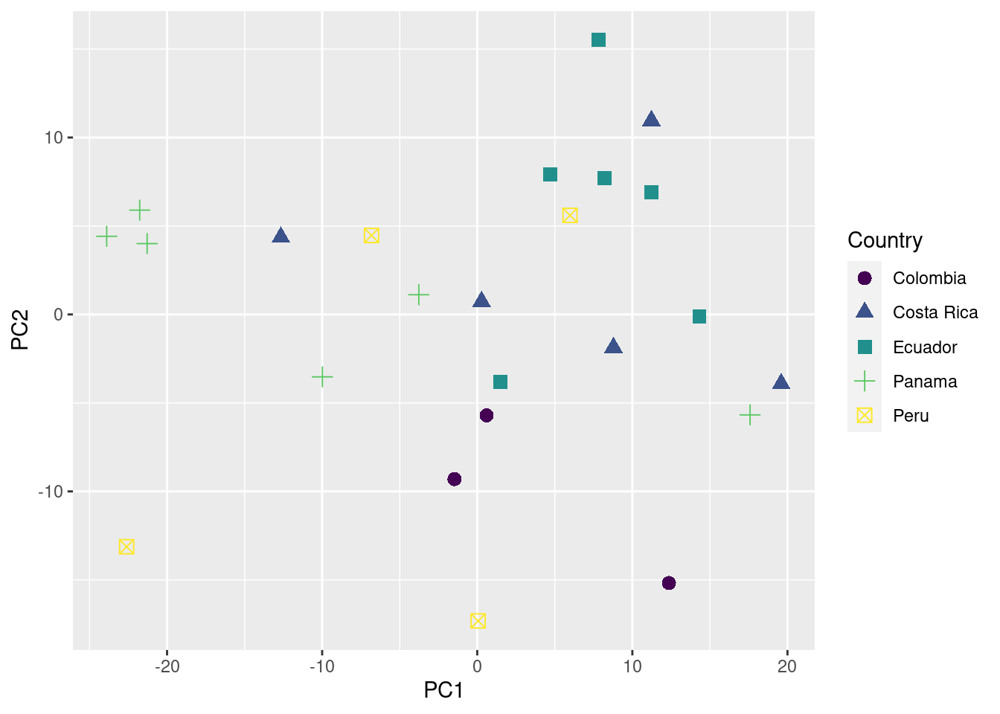
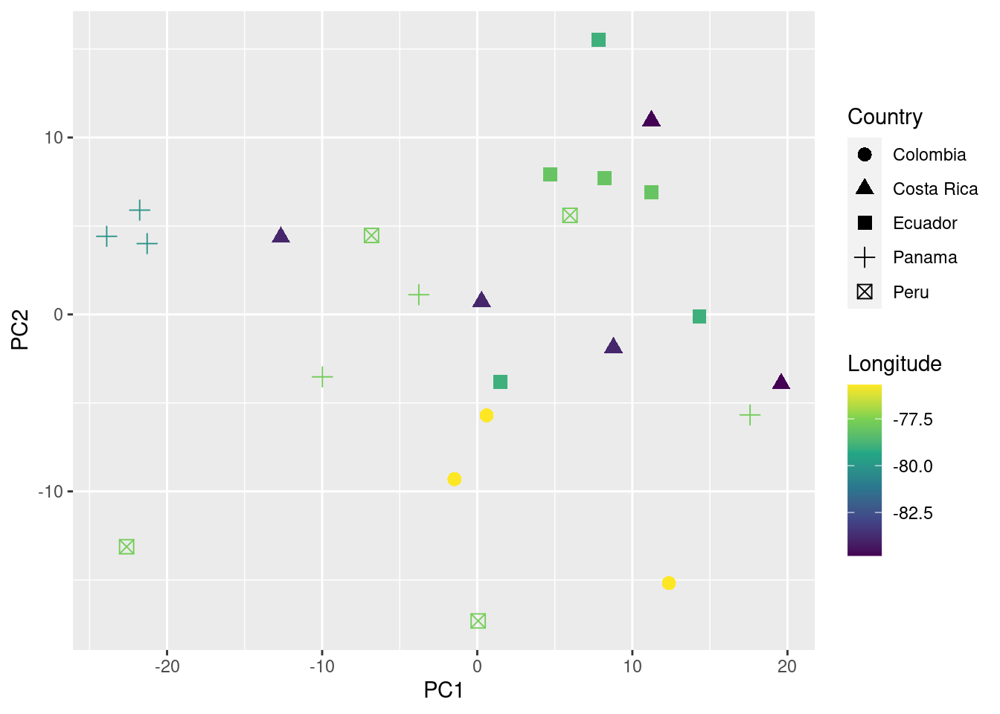

Case study
Objetive
- Demonstrate how to articulate functions used during the course to obtain, explore and quantify acoustic data
1 Download Xeno-Canto data
The warbleR function query_xc() queries for avian vocalization recordings in the open-access online repository Xeno-Canto. It can return recordings metadata or download the associated sound files.
Get recording metadata for green hermits (Phaethornis guy):
Code
library(warbleR)
pg <- query_xc(qword = 'Phaethornis guy', download = FALSE)
Keep only song vocalizations of high quality:
Code
song_pg <- pg[grepl("song", ignore.case = TRUE, pg$Vocalization_type) & pg$Quality == "A", ]
# remove 1 site from Colombia to have a few samples per country
song_pg <- song_pg[song_pg$Locality != "Suaita, Santander", ]Map locations using map_xc():
Code
map_xc(song_pg, leaflet.map = TRUE)
Once you feel fine with the subset of data you can go ahead and download the sound files and save the metadata as a .csv file:
Code
query_xc(X = song_pg, path = "./examples/p_guy", parallel = 3)
write.csv(song_pg, file = "./examples/p_guy/metadata_p_guy_XC.csv", row.names = FALSE)
2 Preparing sound files for analysis (optional)
Now convert all to .wav format (mp3_2_wav) and homogenizing sampling rate and bit depth (fix_wavs):
Code
mp3_2_wav(samp.rate = 22.05, path = "./examples/p_guy")
fix_wavs(path = "./examples/p_guy", samp.rate = 44.1, bit.depth = 16)
3 Annotating sound files in Raven
Now songs should be manually annotated and all the selection in the .txt files should be pooled together in a single spreadsheet.
4 Importing annotations into R
Once that is done we can read the spreadsheet with the package ‘readxl’ as follows:
Code
# install.packages("readxl") # install if needed
# load package
library(readxl)
# read data
annotations <- read_excel(path = "./examples/p_guy/annotations_p_guy.xlsx")
# check data
head(annotations)| selec | Channel | start | end | bottom.freq | top.freq | selec.file |
|---|---|---|---|---|---|---|
| 1 | 1 | 0.7737 | 0.9939384 | 2.0962 | 7.7252 | Phaethornis-guy-2022.Table.1.selections.txt |
| 2 | 1 | 1.6837 | 1.9068363 | 2.0726 | 7.6074 | Phaethornis-guy-2022.Table.1.selections.txt |
| 3 | 1 | 10.1657 | 10.3917342 | 1.8371 | 8.0078 | Phaethornis-guy-2022.Table.1.selections.txt |
| 4 | 1 | 16.3237 | 16.5468363 | 2.0726 | 7.3248 | Phaethornis-guy-2022.Table.1.selections.txt |
| 5 | 1 | 1.6069 | 1.7517937 | 1.7193 | 8.7615 | Phaethornis-guy-2022.Table.1.selections.txt |
| 6 | 1 | 1.0129 | 1.1548958 | 1.7193 | 8.9264 | Phaethornis-guy-2022.Table.1.selections.txt |
Note that the column names should be: “start”, “end”, “bottom.freq”, “top.freq” and “sound.files”. In addition frequency columns (“bottom.freq” and “top.freq”) must be in kHz, not in Hz. We can check if the annotations are in the right format using warbleR’s check_sels():
Code
sound_file_path <- "./examples/p_guy/converted_sound_files/"
cs <- check_sels(annotations, path = sound_file_path)all selections are OK
5 Measure acoustic structure
We can measured several parameters of acoustic structure with the warbleR function spectro_analysis():
Code
sp <- spectro_analysis(X = annotations, path = sound_file_path)
Then we summarize those parameters with a Principal Component Analysis (PCA):
Code
# run excluding sound file and selec columns
pca <- prcomp(sp[, -c(1, 2)])
# add first 2 PCs to sound file and selec columns
pca_data <- cbind(sp[, c(1, 2)], pca$x[, 1:2])
At this point should should get someting like this:
Code
head(pca_data)| sound.files | selec | PC1 | PC2 |
|---|---|---|---|
| Phaethornis-guy-227574.wav | 1 | -22.6069606 | -13.127152 |
| Phaethornis-guy-227574.wav | 2 | 0.0586673 | -17.321796 |
| Phaethornis-guy-227574.wav | 3 | 5.9795115 | 5.601346 |
| Phaethornis-guy-227574.wav | 4 | -6.8159094 | 4.462788 |
| Phaethornis-guy-238804.wav | 5 | 11.2315003 | 6.895327 |
| Phaethornis-guy-238804.wav | 6 | 4.6828306 | 7.918963 |
‘PC1’ and ‘PC2’ are the 2 new dimensions that will be used to represent the acoustic space.
6 Adding metadata
Now we just need to add any metadata we considered important to try to explain acoustic similarities shown in the acoustic space scatterplot:
Code
# read XC metadata
song_pg <- read.csv("./examples/p_guy/metadata_p_guy_XC.csv")
# create a column with the file name in the metadata
song_pg$sound.files <- paste0(song_pg$Genus, "-", song_pg$Specific_epithet, "-", song_pg$Recording_ID, ".wav")
# and merge based on sound files and any metadata column we need
pca_data_md <- merge(pca_data, song_pg[, c("sound.files", "Country", "Latitude", "Longitude")])
7 Assessing geographic patterns of variation
We are ready to plot the acoustic space scatterplot. For this we will use the package ‘ggplot2’:
Code
# install.packages("ggplot2")
library(ggplot2)
# install.packages("viridis")
library(viridis)Loading required package: viridisLiteCode
# plot
ggplot(data = pca_data_md, aes(x = PC1, y = PC2, color = Country, shape = Country)) +
geom_point(size = 3) +
scale_color_viridis_d()
You can also add information about their geographic location (in this case longitude) to the plot as follows:
Code
# plot
ggplot(data = pca_data_md, aes(x = PC1, y = PC2, color = Longitude, shape = Country)) +
geom_point(size = 3) +
scale_color_viridis_c()
We can even test if geographic distance is associated to acoustic distance (i.e. if individuals geographically closer produce more similar songs) using a mantel test (mantel function from the package vegan):
Code
# create geographic and acoustic distance matrices
geo_dist <- dist(pca_data_md[, c("Latitude", "Longitude")])
acoust_dist <- dist(pca_data_md[, c("PC1", "PC2")])
# install.packages("vegan")
library(vegan)
# run test
mantel(geo_dist, acoust_dist)
Mantel statistic based on Pearson's product-moment correlation
Call:
mantel(xdis = geo_dist, ydis = acoust_dist)
Mantel statistic r: 0.02928
Significance: 0.235
Upper quantiles of permutations (null model):
90% 95% 97.5% 99%
0.0669 0.1024 0.1397 0.1622
Permutation: free
Number of permutations: 999
In this example no association between geographic and acoustic distance was detected (p value > 0.05).
Session information
R version 4.2.2 Patched (2022-11-10 r83330)
Platform: x86_64-pc-linux-gnu (64-bit)
Running under: Ubuntu 20.04.5 LTS
Matrix products: default
BLAS: /usr/lib/x86_64-linux-gnu/blas/libblas.so.3.9.0
LAPACK: /usr/lib/x86_64-linux-gnu/lapack/liblapack.so.3.9.0
locale:
[1] LC_CTYPE=es_ES.UTF-8 LC_NUMERIC=C
[3] LC_TIME=es_CR.UTF-8 LC_COLLATE=es_ES.UTF-8
[5] LC_MONETARY=es_CR.UTF-8 LC_MESSAGES=es_ES.UTF-8
[7] LC_PAPER=es_CR.UTF-8 LC_NAME=C
[9] LC_ADDRESS=C LC_TELEPHONE=C
[11] LC_MEASUREMENT=es_CR.UTF-8 LC_IDENTIFICATION=C
attached base packages:
[1] stats graphics grDevices utils datasets methods base
other attached packages:
[1] vegan_2.6-4 lattice_0.20-45 permute_0.9-7 viridis_0.6.3
[5] viridisLite_0.4.2 ggplot2_3.4.2 readxl_1.4.1 warbleR_1.1.28
[9] NatureSounds_1.0.4 knitr_1.42 seewave_2.2.0 tuneR_1.4.4
loaded via a namespace (and not attached):
[1] Rcpp_1.0.10 fftw_1.0-7 digest_0.6.31 foreach_1.5.2
[5] utf8_1.2.3 R6_2.5.1 cellranger_1.1.0 signal_0.7-7
[9] evaluate_0.21 pillar_1.9.0 rlang_1.1.1 rstudioapi_0.14
[13] Matrix_1.5-1 rmarkdown_2.21 splines_4.2.2 labeling_0.4.2
[17] htmlwidgets_1.5.4 RCurl_1.98-1.12 munsell_0.5.0 proxy_0.4-27
[21] compiler_4.2.2 xfun_0.39 pkgconfig_2.0.3 mgcv_1.8-41
[25] htmltools_0.5.5 tidyselect_1.2.0 tibble_3.2.1 gridExtra_2.3
[29] dtw_1.23-1 codetools_0.2-19 fansi_1.0.4 dplyr_1.1.0
[33] withr_2.5.0 shinyBS_0.61.1 MASS_7.3-58.2 bitops_1.0-7
[37] brio_1.1.3 grid_4.2.2 nlme_3.1-162 jsonlite_1.8.4
[41] gtable_0.3.3 lifecycle_1.0.3 magrittr_2.0.3 scales_1.2.1
[45] cli_3.6.1 pbapply_1.7-0 farver_2.1.1 leaflet_2.1.1
[49] testthat_3.1.8 vctrs_0.6.2 generics_0.1.3 rjson_0.2.21
[53] iterators_1.0.14 tools_4.2.2 glue_1.6.2 maps_3.4.1
[57] crosstalk_1.2.0 parallel_4.2.2 fastmap_1.1.1 yaml_2.3.7
[61] colorspace_2.1-0 cluster_2.1.4 soundgen_2.5.3